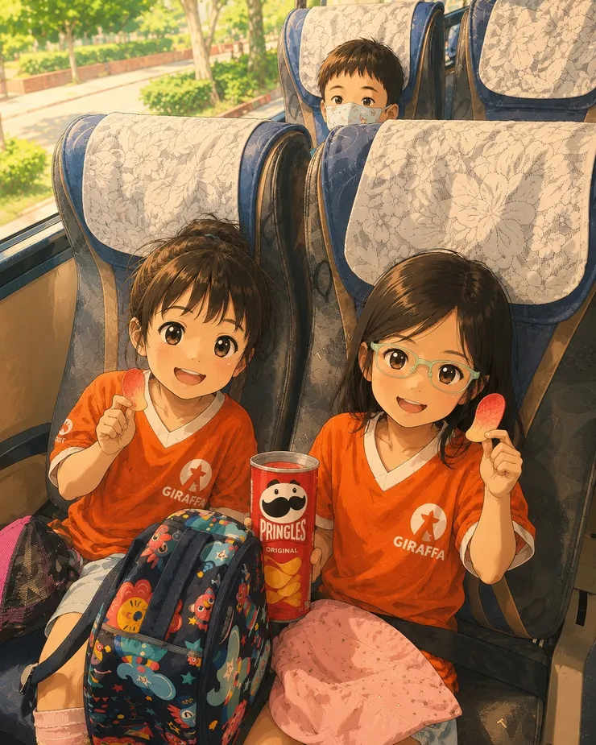

──當照片和回憶重疊時，我看見了五歲孩子眼中的世界
上星期二，長頸鹿夏令營到綠世界校外教學，因為不開放家長陪同，其實鼠姊姊一直到了出發前一天晚上，都還一直很失落。雞爸爸和鼠媽媽只能和其他爸爸媽媽一樣，準備好遠足要帶的點心、水壺和替換衣物，再起個大早，把孩子準時交給老師。然後，我們去上班。把一整天的冒險，交給老師；把一整天的思念，留給自己...直到一張照片，讓我看見五歲孩子眼中的世界...
孩子眼中的綠世界，老師鏡頭裡的鼠姊姊。
鼠姊姊：樹懶、鸚鵡，還有一包洋芋片
晚上接到鼠姊姊，雞爸爸馬上問：「今天好不好玩？」她沒有思考，眼睛睜得大大地說：
「把拔！我跟你說，樹懶其實爬得很快，還有一隻樹懶從我的頭上這樣～爬過去！」
我愣了一下，心裡其實有點半信半疑，想說她肯定是為了誇大，才說從她頭上爬過去吧！我又問：「除了樹懶呢？」鼠姊姊又說：
「還有好多鸚鵡！什麼顏色都有，有白色、藍色、紅色、彩色...還有翅膀綠綠的...」
剛說完動物之後，鼠姊姊突然又想到另一件開心的事：
「還有我在遊覽車上跟同學交換洋芋片！你一口、我一口、你一口、我一口，好好吃!」
說著說著，她自己先笑了起來，我看著她開心得手舞足蹈，也忍不住笑了。原來，一趟校外教學，讓她最難忘的，不只是動物。還有第一次和同學分享零食的小小快樂。
嵌入內容：https://www.youtube-nocookie.com/embed/Rfg6SpruQKo
沒有爸爸媽媽陪伴的校外教學，對孩子是種成長；而爸爸媽媽，也看到了另一種風景。
從老師視野 感受到快樂被敘述得維妙維肖
今天長頸鹿老師在群組通知：「校外教學照片上傳囉！」
雞爸爸迫不及待打開相簿，一張張、一張張往下滑，想說怎麼都還沒看到鼠姊姊的照片。突然，我停住了，有一張照片裡，一群孩子全部抬著頭。
而一隻樹懶，真的就掛在一個小朋友的正上方。有另一個角度的照片，那個背著淡紫色書包、抬著頭看得最認真的小女孩，就是鼠姊姊。
我忍不住笑了，原來，孩子記住的都是真的。
雞爸爸不覺又重新把老師拍的照片全部看了一遍，我發現一件很有趣的事：鼠姊姊回家跟我分享的重點，不但和老師鏡頭下的重點一模一樣，回想她敘述的內容，真是維妙維肖。
鼠姊姊說樹懶，老師拍下了抬頭望著樹懶的那一刻，全部的小朋友看著她和樹懶的畫面。
鼠姊姊說好多好多鸚鵡，老師也留下了她認真觀察鸚鵡的畫面。
老師唯一拍不到的，是去程遊覽車上，那包早就被分享光光的洋芋片。但我相信，那肯定也是她今天最快樂的回憶...
鼠姊姊的閃亮回憶 不假思索地分享感受
以前覺得，小朋友講故事總愛「加油添醋」。看了照片才發現，鼠姊姊一點也沒有誇張。她沒有像大人一樣，先整理重點、思考順序、修飾文字。她只是很直接地，把腦海裡最深刻、最快樂的感受，一股腦地分享給爸爸媽媽。
大人旅行回來，總會介紹去了哪些景點、吃了哪些美食、拍了多少照片。
五歲的孩子不在乎那些，就直白的說出這趟旅程帶給她的感受。
她記得的是：有一隻樹懶從頭頂經過、好多顏色鮮豔的鸚鵡，當然還有和同學你一口、我一口，單純分享洋芋片的快樂。
遊記該怎麼寫，怎麼起承轉合、怎麼分享才有內容，那是大人的規矩。孩子不用。他們只是誠實地說出，今天最快樂的是什麼。
而那些看似微不足道的流水帳，其實就是他們心裡最閃亮的回憶。
看著老師拍下的，是鼠姊姊最開心的一天，我忽然很感謝這群老師。謝謝他們帶著孩子走進綠世界、認識動物，也替家長記錄下那些我們無法參與的時刻。更謝謝他們，讓我知道，鼠姊姊那天興奮地說的每一句話，都是真的。

帶回家的是紀念品？還是感受？
孩子旅行帶回家的，從來不只是紀念品，而是一段會發光的回憶。有時候，是一隻從頭頂爬過的樹懶。有時候，是一群顏色鮮艷的鸚鵡。有時候，只是去程遊覽車上，一包和同學分享光光的洋芋片。又或者在鼠姊姊心中，那包洋芋片，比紀念品更重要。
而當老師鏡頭下的畫面，和鼠姊姊帶回家的感受重疊在一起時，我才真正理解原來孩子也一直很認真地看著這個世界。
